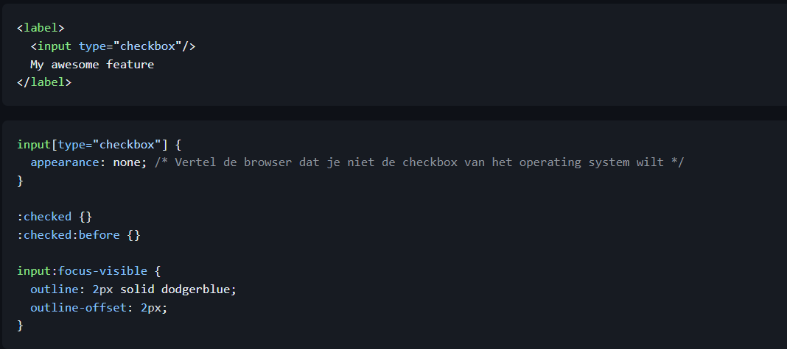
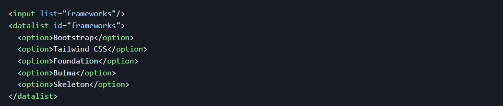
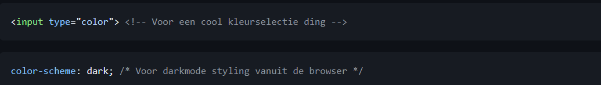
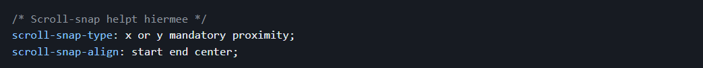

Nerd 1: KilianValkhof
Moving Features from JS to CSS & HTML
The Rule of Least Power
De regel van de minste macht stelt dat je de programmeertaal moet kiezen die net krachtig genoeg is om je doel te bereiken. Maar waarom zou je dit toepassen als je veel dingen met JavaScript kunt oplossen? JavaScript is namelijk het meest breekbaar en kan ervoor zorgen dat je onbewust te veel grote bestanden doorstuurt.
De makers van browsers luisteren tegenwoordig meer naar wat developers willen, waardoor het web zich snel ontwikkelt. Alles wat je bouwt op het web blijft werken, maar kijk altijd of er geen betere manier is om hetzelfde te bereiken.
Custom Toggles
Data list
Color selection:
In page Transitions

Positioning
Position fixed element is lastig om mee te werken want die wordt uit je pagina gehaald. Dit maakt stijlen lastig. Position sticky zorgt ervoor dat een element normaal functioneert totdat het bij een bepaalde waarde komt en dan is het fixed.
Carousels
Wat vind ik hier van?
Deze lezing van Kilian Valkhof vond ik erg informatief. Het was handig omdat het over CSS ging, wat ik leuk vind om te gebruiken. Het was nuttig om te zien wat er allemaal met CSS mogelijk was en hoe simpel alles te coderen was. The Rule of Least Power vond ik ook een interessant principe. Wanneer ik iets in JavaScript maak, raak ik snel de kluts kwijt. Ik heb dus de voorkeur om zoveel mogelijk met HTML en CSS te werken. Misschien komt dit ook omdat ik nog weinig van JavaScript begrijp en hier nog veel mee moet oefenen, dus mijn mening hierover kan nog veranderen. Ik geef deze weekly nerd een 7,5/10